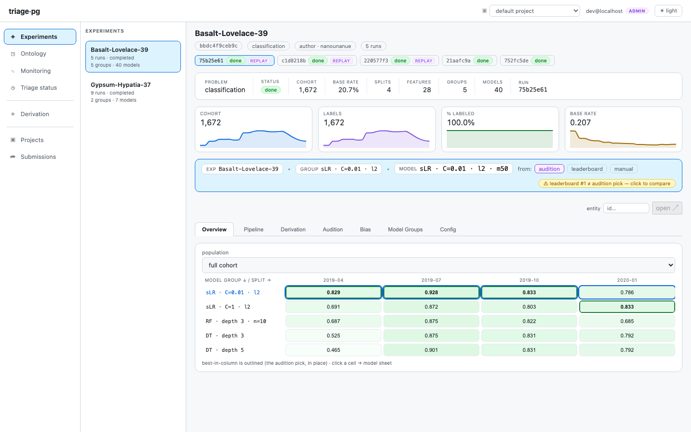

triage-pg
Temporal ML for public-policy decisions, with PostgreSQL as the whole substrate — a deliberately simplified fork of DSSG's triage.
early-warning systems
resource prioritization
4 problem types incl. survival
in-database evaluation
fairness + audition + monitoring
The pipeline — one pass, every artifact content-addressed
The mental model — three ideas carry everything
| An Experiment is a problem | Its hash covers exactly {problem_type, cohort, labels, temporal grid}. Runs are attempts at it; fairness audits, subsets, and metric choices are identity-neutral — adding them never changes what problem it is. |
|---|---|
| Artifacts are content-addressed | Every cohort, label set, matrix, and model is identified by a hash over its complete input closure (Guix-style). Caching, provenance, and GC all follow — re-running is cheap and reproducible by construction. |
| Point-in-time correctness is the cardinal rule | Features for an as_of_date may use only what was knowable strictly
before it. The featurizer's as-of joins and the fit-free/fit-based imputation split
exist to protect that boundary. |
Five minutes to a running experiment
# prerequisites: uv, Docker, just
uv sync --extra dev --extra dashboard
just chi311-up # real Chicago 311 data, dockerized PG
# point triage at it + create the schema (docs/quickstart.md, 2 commands)
uv run triage --dbfile chicago311-database.yaml run \
example/chicago311/greenfield.yaml --project-path /tmp/chi311-run
# inspect — same views everywhere (headless-complete, ADR-0012)
uv run triage leaderboard <hash> # or psql, or the dashboard (just serve)
uv run triage audition <hash> # 8 selection rules + divergence
uv run triage postmodel error-tree <model-id> # where does it fail?
What you get out of the box
Model selection — in-PG audition: distance-from-best, max regret,
regret-next-time, all 8 DSSG selection rules.
Fairness — 8 per-group metrics with disparity + τ verdicts, config-driven ingestion, and the Aequitas fairness tree as a guidance wizard.
Diagnostics — crosstabs, error trees, calibration, list overlap, per-entity contributions: CLI computes once, PostgreSQL persists, dashboard reads.
Fairness — 8 per-group metrics with disparity + τ verdicts, config-driven ingestion, and the Aequitas fairness tree as a guidance wizard.
Diagnostics — crosstabs, error trees, calibration, list overlap, per-entity contributions: CLI computes once, PostgreSQL persists, dashboard reads.
Monitoring — scheduled
Multi-tenancy — one database per project + a registry;
Two profiles — local (any standalone PostgreSQL) and cloud (RDS IAM + S3 + AWS Batch) behind one seam.
triage score + drift (PSI/KS), volume,
calibration, realized outcomes. No daemon: a cron line and four SQL objects.Multi-tenancy — one database per project + a registry;
triage project create/drop; a project switcher in the dashboard.Two profiles — local (any standalone PostgreSQL) and cloud (RDS IAM + S3 + AWS Batch) behind one seam.
Ten words you'll keep using (full glossary: CONTEXT.md)
- Project
- one isolated PostgreSQL database + a registry row.
- Experiment
- the problem (hash over the four problem keys).
- Run
- one attempt at an experiment; runs cache-share artifacts.
- as_of_date
- the decision moment features must not see past.
- Cohort
- who is scored at an as_of_date (templated SQL).
- Matrix
- entities × features Parquet, per split.
- Model group
- algorithm + hyperparameters + feature list, across splits.
- Prediction
- append-only, timestamped score — never overwritten.
- Subset
- a named cohort slice evaluated as its own population.
- Forward score
- a scheduled scoring run; monitoring's heartbeat.
Where to go next
docs/quickstart.md | zero → running experiment → dashboard → diagnostics |
dirtyduck/ · chicago311/ · donorschoose/ | three self-contained tutorial datasets (dockerized, real data) |
docs/fairness.md · docs/postmodeling.md · docs/monitoring.md | the three operator guides |
docs/adr/ (28 records) · CONTEXT.md | every hard decision, and the vocabulary |
docs/triage-pg-vs-dssg-triage.html | coming from DSSG triage? the honest side-by-side |
triage-pg is MIT-licensed and stands on DSSG/DSaPP's triage — temporal
cross-validation, leakage-safe features, model governance, and the fairness tree are their
ideas. This page is self-contained (inline CSS/SVG; images from docs/images/)
and prints to ≤2 pages as the classroom handout.